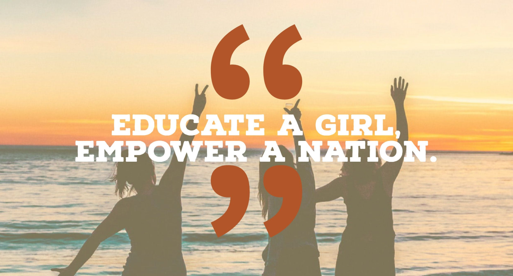

Title: Chalo Parho Pakistan: Empowering the Nation Through Education
By Admin Posted on
11-08-2023 Comments(10)


In recent years, Pakistan has witnessed a remarkable movement that has been transforming the educational landscape of the country - "Chalo Parho Pakistan" (Let's Go, Study Pakistan). This movement, initiated by passionate individuals and organizations, aims to empower the nation through education and create a brighter future for the coming generations. In this blog post, we delve into the essence of the "Chalo Parho Pakistan" movement, exploring its goals, achievements, and the impact it has had on Pakistani society. ... More
In recent years, Pakistan has witnessed a remarkable movement that has been transforming the educational landscape of the country - "Chalo Parho Pakistan" (Let's Go, Study Pakistan). This movement, initiated by passionate individuals and organizations, aims to empower the nation through education and create a brighter future for the coming generations. In this blog post, we delve into the essence of the "Chalo Parho Pakistan" movement, exploring its goals, achievements, and the impact it has had on Pakistani society. The Vision Behind Chalo Parho Pakistan: The vision of the "Chalo Parho Pakistan" movement is to ensure access to quality education for every child in the country. Its founders firmly believe that education is the key to alleviating poverty, reducing inequality, and fostering social and economic development. By nurturing a love for learning and knowledge, the movement seeks to empower the youth to become active contributors to their communities and, ultimately, the nation. Achievements So Far: Since its inception, "Chalo Parho Pakistan" has achieved several milestones that have brought about tangible change in the educational landscape. Notably, the movement has succeeded in increasing enrollment rates, particularly among underprivileged and marginalized communities. Through awareness campaigns and innovative outreach programs, it has made strides in encouraging parents to send their children, especially girls, to schools. Moreover, the movement has collaborated with government bodies, NGOs, and private entities to improve the quality of education in schools. Teacher training programs, infrastructure development, and access to learning resources are some of the areas where "Chalo Parho Pakistan" has made significant progress. The Role of Technology: One of the driving forces behind the success of "Chalo Parho Pakistan" is the integration of technology in education. By leveraging digital tools and e-learning platforms, the movement has extended educational opportunities to remote areas, reaching children who previously had limited access to formal schooling. Additionally, technology has enabled teachers to enhance their teaching methods and provide personalized learning experiences for their students. Impact on Pakistani Society: The impact of the "Chalo Parho Pakistan" movement extends far beyond the classrooms. As more children receive an education, the nation's workforce becomes more skilled and knowledgeable, leading to economic growth and prosperity. Education also empowers individuals to make informed decisions, fostering a sense of civic responsibility and active citizenship. Furthermore, education has proven to be an effective means of countering social issues such as child labor, child marriages, and gender discrimination. By breaking the cycle of illiteracy, "Chalo Parho Pakistan" is contributing to a more equitable and just society. Conclusion: The "Chalo Parho Pakistan" movement stands as a testament to the power of education in transforming a nation. With its unwavering commitment to providing quality learning opportunities for all, the movement continues to inspire hope and change in Pakistan. As we move forward, let us join hands and support this noble cause, ensuring that every child has the opportunity to learn, grow, and create a brighter future for themselves and their beloved country.Less
Title: Chalo Parho Pakistan: A Beacon of Hope for Education Equality
By Admin Posted on
10-08-2023 Comments(15)
In a nation where education has long been a dream for many, the "Chalo Parho Pakistan" movement has emerged as a beacon of hope, illuminating the path towards education equality. This transformative movement is not just about textbooks and classrooms; it embodies the spirit of change, resilience, and empowerment. In this blog post, we delve into the heart of "Chalo Parho Pakistan," exploring the challenges it addresses and the remarkable strides it has taken towards reshaping the educational landscape. ... More
In a nation where education has long been a dream for many, the "Chalo Parho Pakistan" movement has emerged as a beacon of hope, illuminating the path towards education equality. This transformative movement is not just about textbooks and classrooms; it embodies the spirit of change, resilience, and empowerment. In this blog post, we delve into the heart of "Chalo Parho Pakistan," exploring the challenges it addresses and the remarkable strides it has taken towards reshaping the educational landscape. The Challenge of Education Inequality: For years, Pakistan has grappled with stark disparities in education access and quality. Rural areas, in particular, suffer from insufficient infrastructure, inadequate resources, and a lack of qualified teachers. Moreover, socio-economic factors often prevent children, especially girls, from attending school. The "Chalo Parho Pakistan" movement confronts these challenges head-on, determined to bridge the gap and create a more inclusive educational environment. Empowering Local Communities: At the core of the "Chalo Parho Pakistan" movement lies the belief in empowering local communities. By engaging community members in decision-making and implementation, the movement fosters a sense of ownership and accountability. Schools become not just institutions of learning but vibrant hubs of community involvement, where parents, teachers, and students collaborate to create a nurturing and inspiring educational ecosystem. Digital Literacy for the Future: Recognizing the importance of digital literacy in the modern world, the movement has embraced technology as a catalyst for change. Through the provision of digital tools and training, "Chalo Parho Pakistan" equips students with 21st-century skills, enabling them to navigate the digital landscape confidently. E-learning platforms also offer a wealth of educational resources, enriching the learning experience for students in even the remotest regions. Investing in Teacher Excellence: Teachers are the backbone of any educational endeavor, and "Chalo Parho Pakistan" understands their pivotal role in shaping young minds. The movement places great emphasis on teacher training programs, equipping educators with innovative teaching methodologies and professional development opportunities. By elevating the status of teachers, the movement inspires them to be catalysts of change, nurturing a new generation of critical thinkers and problem solvers. Creating Safe Learning Spaces: Safety and security are vital for a conducive learning environment. "Chalo Parho Pakistan" is dedicated to creating safe spaces where children can flourish without fear. The movement addresses issues of bullying and harassment, promoting a culture of respect and empathy within educational institutions. Impact and the Path Forward: The impact of "Chalo Parho Pakistan" is evident in the increasing enrollment rates and improving learning outcomes across the country. Thousands of previously marginalized children are now receiving an education, unlocking their potential and igniting the flame of ambition within their hearts. As we move forward, the road ahead remains challenging, but the resolve of the "Chalo Parho Pakistan" movement is unwavering. With continued support from government bodies, philanthropic organizations, and the global community, this movement has the potential to change the destiny of Pakistan, one child, one school, and one community at a time. Conclusion: "Chalo Parho Pakistan" is more than just a movement; it is a testament to the power of education in transforming lives and entire communities. With a commitment to inclusivity, innovation, and empowerment, this movement stands tall as a symbol of hope and progress for a brighter, more equitable future. Let us unite in support of "Chalo Parho Pakistan" and pave the way for a nation where education is a right, not a privilegeLess
Title: Chalo Parho Pakistan: A Beacon of Hope for Education Equality
By Admin Posted on
10-08-2023 Comments(15)
In a nation where education has long been a dream for many, the "Chalo Parho Pakistan" movement has emerged as a beacon of hope, illuminating the path towards education equality. This transformative movement is not just about textbooks and classrooms; it embodies the spirit of change, resilience, and empowerment. In this blog post, we delve into the heart of "Chalo Parho Pakistan," exploring the challenges it addresses and the remarkable strides it has taken towards reshaping the educational landscape. ... More
In a nation where education has long been a dream for many, the "Chalo Parho Pakistan" movement has emerged as a beacon of hope, illuminating the path towards education equality. This transformative movement is not just about textbooks and classrooms; it embodies the spirit of change, resilience, and empowerment. In this blog post, we delve into the heart of "Chalo Parho Pakistan," exploring the challenges it addresses and the remarkable strides it has taken towards reshaping the educational landscape. The Challenge of Education Inequality: For years, Pakistan has grappled with stark disparities in education access and quality. Rural areas, in particular, suffer from insufficient infrastructure, inadequate resources, and a lack of qualified teachers. Moreover, socio-economic factors often prevent children, especially girls, from attending school. The "Chalo Parho Pakistan" movement confronts these challenges head-on, determined to bridge the gap and create a more inclusive educational environment. Empowering Local Communities: At the core of the "Chalo Parho Pakistan" movement lies the belief in empowering local communities. By engaging community members in decision-making and implementation, the movement fosters a sense of ownership and accountability. Schools become not just institutions of learning but vibrant hubs of community involvement, where parents, teachers, and students collaborate to create a nurturing and inspiring educational ecosystem. Digital Literacy for the Future: Recognizing the importance of digital literacy in the modern world, the movement has embraced technology as a catalyst for change. Through the provision of digital tools and training, "Chalo Parho Pakistan" equips students with 21st-century skills, enabling them to navigate the digital landscape confidently. E-learning platforms also offer a wealth of educational resources, enriching the learning experience for students in even the remotest regions. Investing in Teacher Excellence: Teachers are the backbone of any educational endeavor, and "Chalo Parho Pakistan" understands their pivotal role in shaping young minds. The movement places great emphasis on teacher training programs, equipping educators with innovative teaching methodologies and professional development opportunities. By elevating the status of teachers, the movement inspires them to be catalysts of change, nurturing a new generation of critical thinkers and problem solvers. Creating Safe Learning Spaces: Safety and security are vital for a conducive learning environment. "Chalo Parho Pakistan" is dedicated to creating safe spaces where children can flourish without fear. The movement addresses issues of bullying and harassment, promoting a culture of respect and empathy within educational institutions. Impact and the Path Forward: The impact of "Chalo Parho Pakistan" is evident in the increasing enrollment rates and improving learning outcomes across the country. Thousands of previously marginalized children are now receiving an education, unlocking their potential and igniting the flame of ambition within their hearts. As we move forward, the road ahead remains challenging, but the resolve of the "Chalo Parho Pakistan" movement is unwavering. With continued support from government bodies, philanthropic organizations, and the global community, this movement has the potential to change the destiny of Pakistan, one child, one school, and one community at a time. Conclusion: "Chalo Parho Pakistan" is more than just a movement; it is a testament to the power of education in transforming lives and entire communities. With a commitment to inclusivity, innovation, and empowerment, this movement stands tall as a symbol of hope and progress for a brighter, more equitable future. Let us unite in support of "Chalo Parho Pakistan" and pave the way for a nation where education is a right, not a privilegeLess